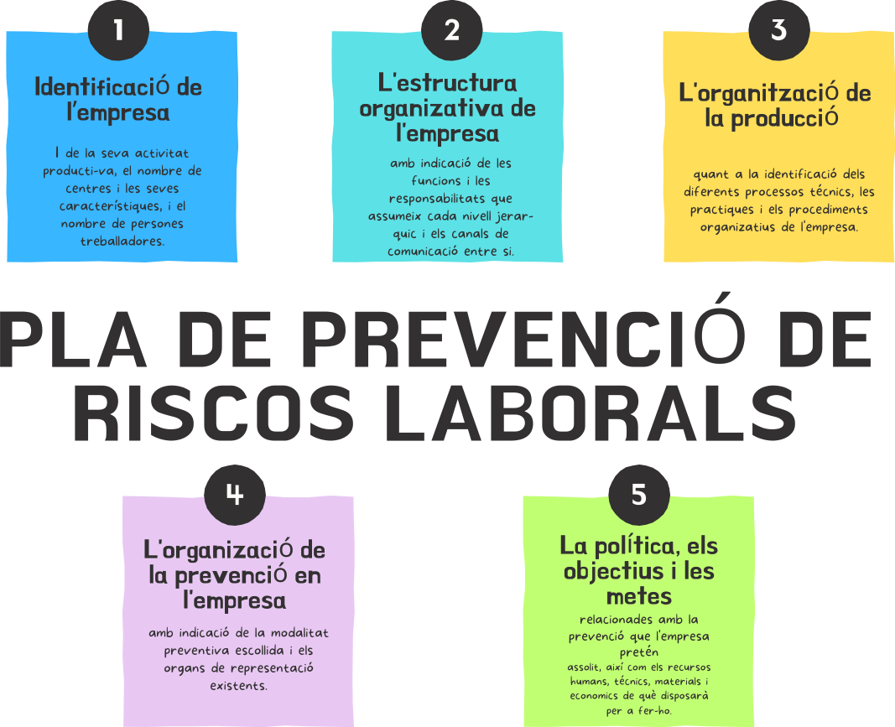
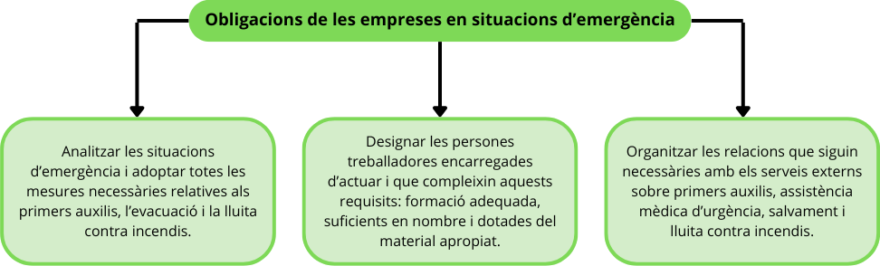

El pla de prevenció de riscos consisteix en aconseguir que no hi hagin accidents ni malalties en l'entorn laboral.
Per dur a terme aquest pla de prevenció es fan evaluacions de riscos i es planifica l'acció preventiva.
En l'activitat laboral d'una empresa es poden presentar circumstancies inesperades que suposin l'aparicio de situacions de perill per a les persones treballadores. Per tal de prevenir les situacions de perill estan les mesures d'emergencia en l'empresa.
